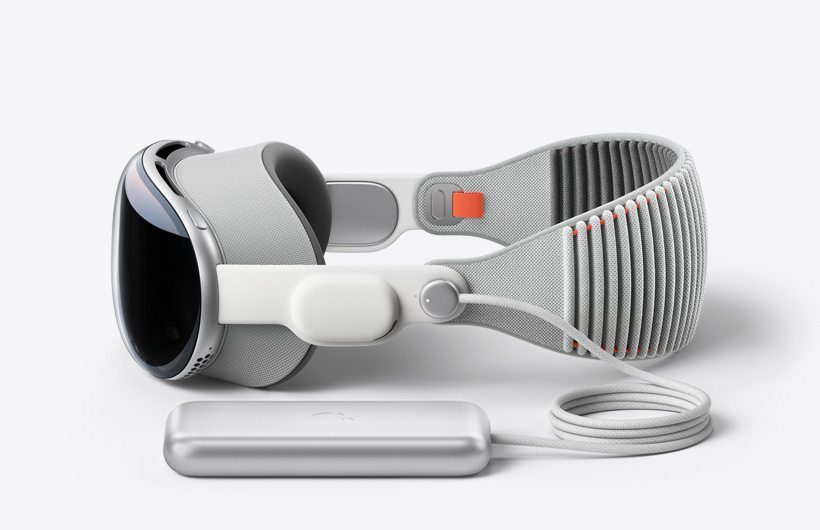
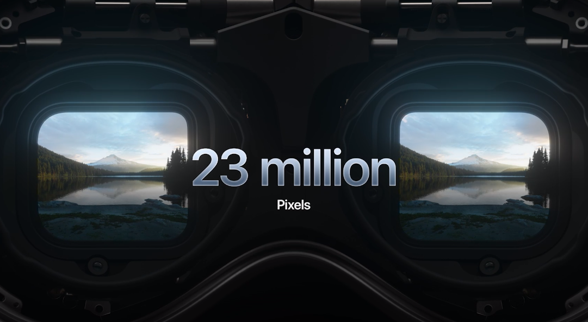
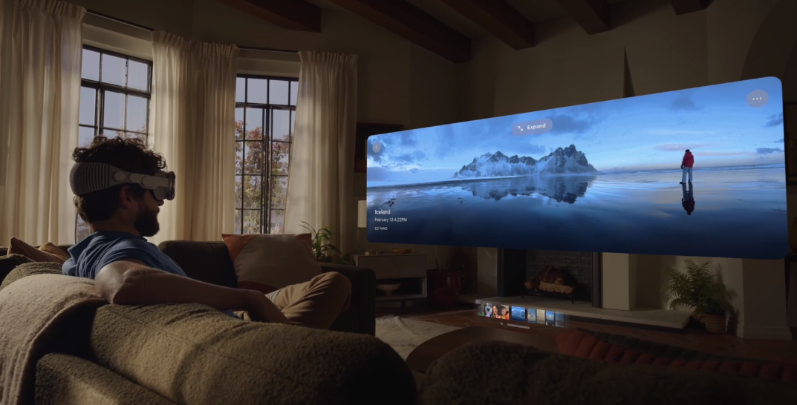
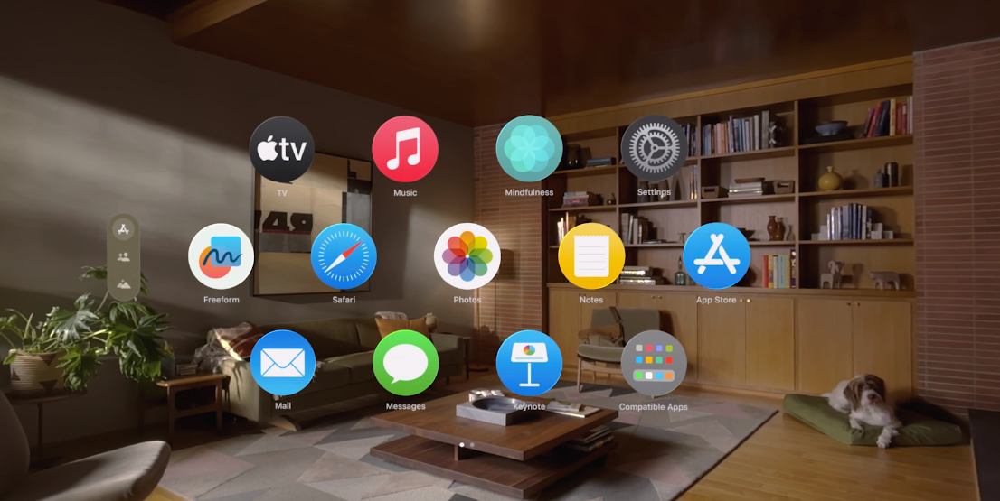
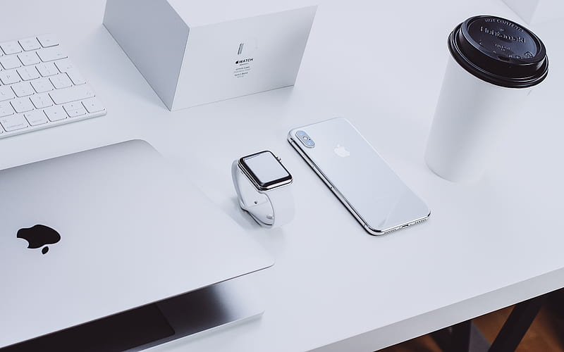
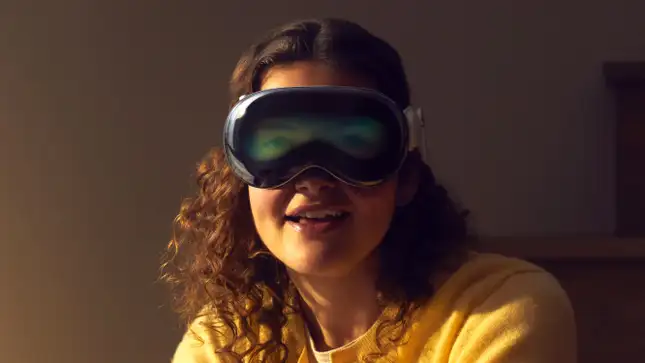
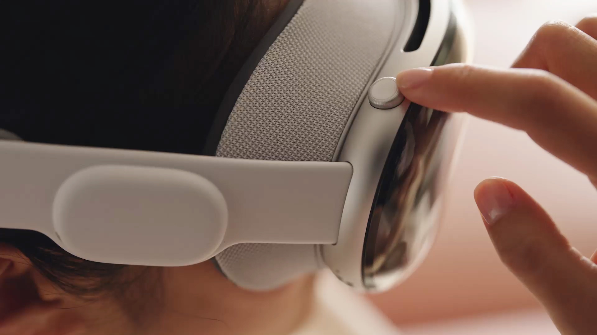

In the ever-evolving landscape of technology, Apple is renowned for its ability to redefine the way we interact with the digital world. As each new product graces the market, it pushes the boundaries of innovation and design. The Apple Vision Pro, Apple's latest venture into the realm of virtual reality (VR), is a testament to their commitment to redefining the user experience through cutting-edge technology and visionary design.
In this blog post, we embark on a journey into the future of virtual reality, exploring the remarkable features and capabilities of the Apple Vision Pro VR headset. This revolutionary device isn't just a piece of technology; it's a portal to an immersive digital world where the boundaries of reality blur, and the possibilities become limitless.
This post aims to provide a comprehensive overview of the Vision Pro, uncovering its features and potential, and showcasing why it stands as a beacon of Apple's dedication to reimagining the way we engage with digital experiences in the immersive realm of VR.
⇨ A New Vision for Display Technology

Apple's Vision Pro signifies a quantum leap in display technology. Apple, known for its high-quality screens, has raised the bar significantly with this product. The Vision Pro isn't just a display; it's a portal to a digital world where every detail and pixel is brought to life in a way that's nothing short of extraordinary.
⇨ Mini-LED Backlighting
The Vision Pro's Mini-LED backlighting technology is a testament to Apple's relentless pursuit of perfection. It introduces precision control over each individual LED, creating a display that's unmatched in its dynamic range and depth of blacks. Whether you're immersing yourself in a movie, meticulously editing photos, or leisurely browsing the web, the Vision Pro's Mini-LED backlighting ensures that your content is presented with unprecedented brilliance.

The Vision Pro's display boasts 6K resolution on a spacious 32-inch canvas, providing an unrivaled level of detail and immersion. With it, you can explore your digital world with a newfound clarity that redefines the meaning of visual excellence.
⇨ ProMotion Display
ProMotion, the adaptive refresh rate technology, is a testament to Apple's obsession with delivering a seamless and responsive experience to users. The Vision Pro's ProMotion display dynamically adjusts its refresh rate, ranging from 24Hz to an astonishing 120Hz, depending on the content you're viewing. This enhancement not only elevates the visual experience to an entirely new level but also extends your device's battery life by conserving power when high refresh rates aren't necessary.

The ProMotion display offers an experience that is unmatched, ensuring that whether you're scrolling through web pages, editing high-resolution images, or watching high-octane action sequences, the Vision Pro is primed to deliver an experience that feels as fluid and dynamic as the world around you.
⇨ Remarkable Color Accuracy
TApple's dedication to accurate and lifelike colors has been a hallmark of its displays, and the Vision Pro takes this commitment to the next level. With its P3 wide color gamut and True Tone technology, the Vision Pro ensures that your visual content is presented exactly as the creators intended.

The P3 wide color gamut is an assurance that you'll witness colors that are vivid, authentic, and true to life. Whether you're a graphic designer working on a critical project or a movie enthusiast seeking a cinematic experience, the Vision Pro ensures that the colors you see are an authentic reflection of the original.
True Tone technology goes a step further by adjusting the white balance automatically to match the lighting conditions in your environment. This feature minimizes eye strain and heightens your immersion in your content, ensuring a viewing experience that is as comfortable as it is captivating.
⇨ An Ecosystem of Possibilities
The Vision Pro isn't merely a display; it's a gateway to Apple's expansive ecosystem. By seamlessly connecting your Vision Pro to your MacBook, iPad, or other Apple devices, you unlock an array of possibilities for productivity, creativity, and seamless content sharing. This integration offers a new dimension to how you work and multitask, propelling your digital life into new horizons.

Whether you're a creative professional seeking a multi-screen setup for enhanced productivity, a student who needs to share notes and assignments across devices, or simply an individual who values the convenience of having their digital life seamlessly integrated, the Vision Pro makes it all possible.
⇨ TrueDepth Camera and Face ID
The Vision Pro isn't just a display; it's a comprehensive package designed to elevate your entire digital experience. Apple has equipped the device with a TrueDepth camera and Face ID, adding an additional layer of security and convenience. The TrueDepth camera is perfect for video conferencing, content creation, and unlocking new creative possibilities, while Face ID ensures that your device remains secure and accessible with just a simple glance.

The TrueDepth camera on the Vision Pro offers exceptional resolution and depth-sensing capabilities, making it an ideal tool for video conferencing, content creation, and a multitude of creative endeavors. Whether you're connecting with colleagues, friends, or family through virtual meetings, or unleashing your artistic potential by leveraging the camera's capabilities, the Vision Pro ensures you do it with unprecedented clarity and detail.
Face ID, on the other hand, introduces a new level of security and convenience to your daily interactions with the device. With a mere glance, you can unlock your Vision Pro, safeguarding your data and privacy while ensuring a swift and secure start to your digital journey.
⇨ A Design Marvel

Apple's commitment to minimalist and sleek design is evident in every aspect of the Vision Pro. With its ultra-thin bezels, the device maximizes screen real estate, ensuring that it's equally perfect for both work and play. The premium build quality is not just stunning; it's also durable, providing you with a device that will stand the test of time.
The Vision Pro is more than just a display; it's a work of art that enhances your workspace. Its slim profile and ultra-thin bezels create an aesthetically pleasing visual canvas that complements any environment. The premium build quality ensures that the Vision Pro not only looks stunning but is also built to withstand the rigors of daily use.
⇨ Conclusion
The Apple Vision Pro is a remarkable leap forward in display technology. It unites cutting-edge features like Mini-LED backlighting, ProMotion, and TrueDepth technology with seamless integration into the Apple ecosystem. Whether you're a creative professional seeking to redefine your workspace, a tech enthusiast ready to embrace the latest in display technology, or simply someone who appreciates the finer details, the Vision Pro is a transformative experience that provides a glimpse into the future of personal computing.
In a world where the digital display has become an integral part of our daily lives, the Vision Pro emerges as a symbol of what's possible when